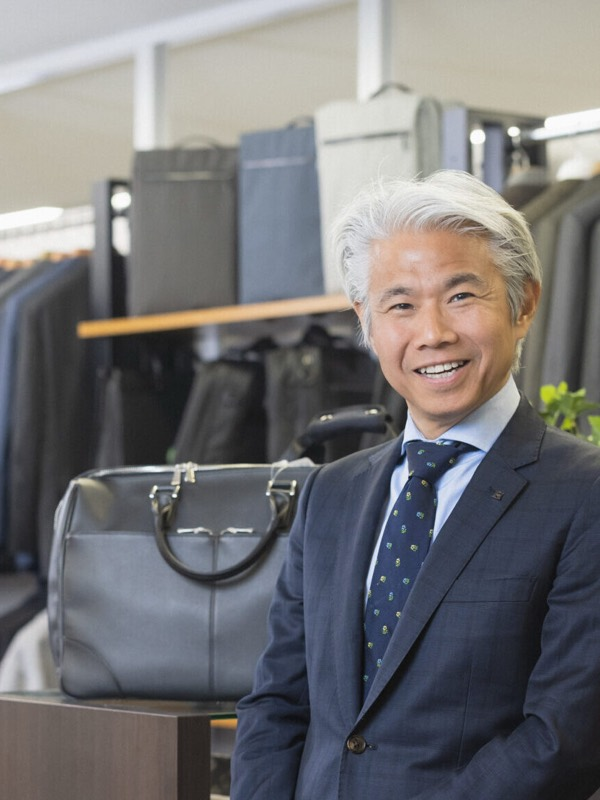
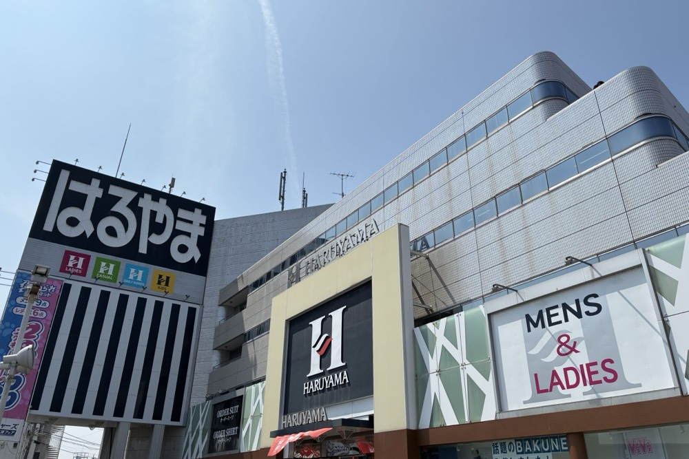
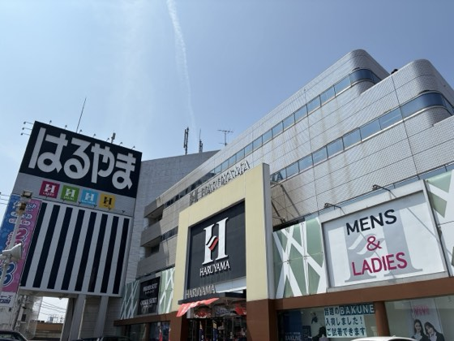
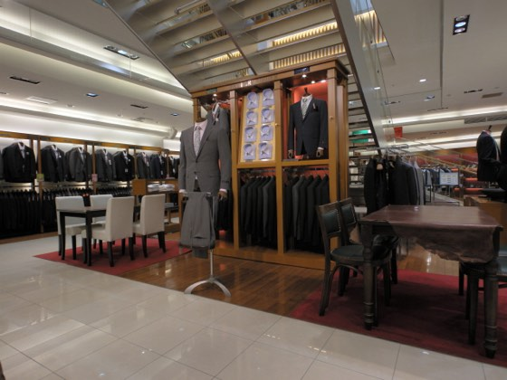
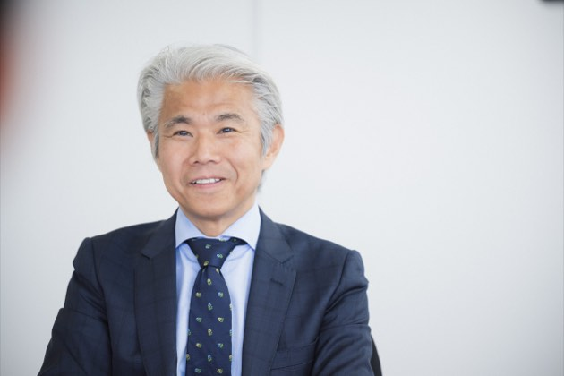
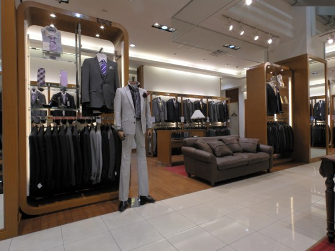
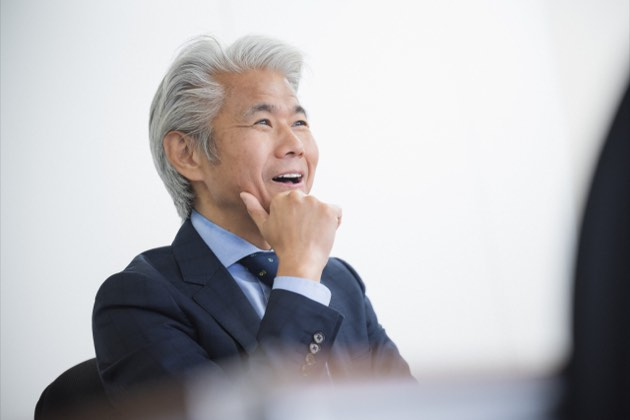
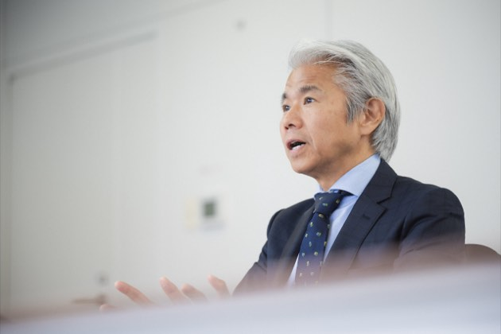
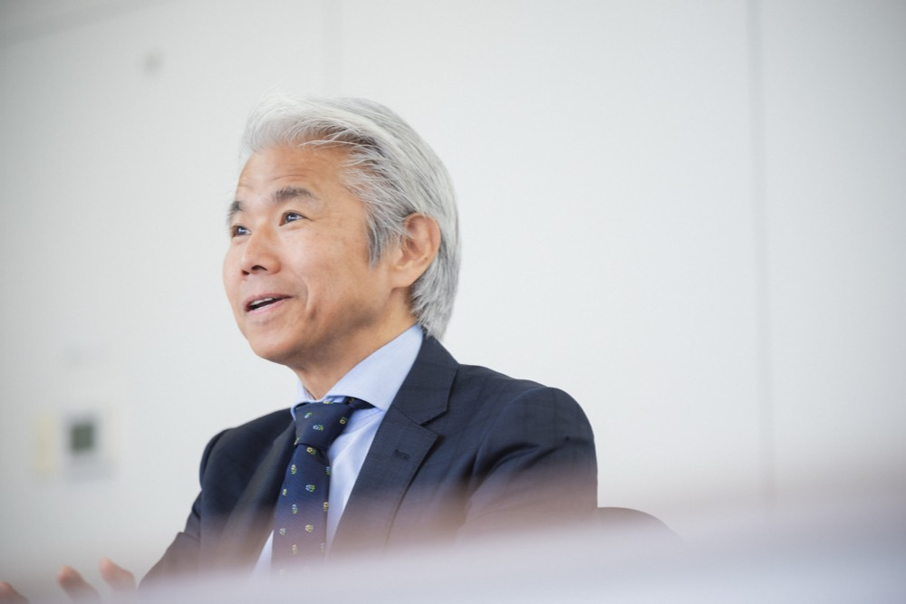

岡山から全国へ!健康を創るはるやまの挑戦
治山 正史masashi haruyama
株式会社はるやま商事ホールディングス 代表取締役会長兼社長
1964年岡山県生まれ。89年立教大学卒業後、伊藤忠商事に入社。94年、家業であるはるやま商事に入社。「脚長スーツ」などのヒット商品を生み出し 2003年に社長就任。現在は「おしゃれと健康」をテーマに、100年後も愛される新しい衣服のスタンダード創出に向けて挑戦を続けている。
企業サイトを見るCHAPTER 01
異業種での経験と家業への帰郷、大ヒットの原点

Qなぜ最初は総合商社へ進み、その後家業へ入られたのでしょうか?
A私の「正史」という名前には、母の「正しい歴史を刻み、歴史に名を残しなさい」という強い願いが込められていました。どうすれば名を残せるかを模索する中で、大学時代に「商社なら世界を舞台に大きな仕事ができ、歴史に爪痕を残せる」と聞き、伊藤忠商事に入社しました。ニューヨーク駐在などを経験し、ビジネスの最前線でがむしゃらに働く毎日は非常にエネルギッシュで充実していました。
しかし、家業が大きな転換期を迎える中で、自らのルーツを見つめ直しました。商社での経験を活かし、自分だからこそできる新しい価値を家業で創造したい、衣服を通じて社会に貢献したいという想いが強くなり、1994年に入社を決意したのです。
Q入社後に発案し社会現象となった「脚長スーツ」の誕生秘話を教えてください。
A当時の紳士服業界は他社の真似をし合うキャッチアップが主流で、商品に明確な違いがありませんでした。圧倒的な差別化が必要だと考えていた時、女性向けの細身で脚が長く見えるジーンズが大ヒットしていることに着目し、メンズスーツへの応用を提案しました。周囲の社員からは「窮屈なスーツが売れるわけがない」と猛反対されましたが、諦めきれずオーダーメイドの職人に頼んで試作品を作ってもらいました。出来上がった実物を見た瞬間、反対していた社員たちも「これはカッコいい!」と声を揃えました。この「脚長スーツ」は爆発的なヒットを記録し、業界の常識を覆しました。周囲に無理だと言われても、面白いと感じたアイデアには前向きに挑戦する姿勢が、私の経営の核となりました。
CHAPTER 02
東日本大震災の衝撃と「おしゃれ×健康」への転換
Q会社の経営方針に最も強い影響を与えたエピソードは何ですか?
A2011年の東日本大震災です。当時、東北地方の店舗が大小合わせて約40店舗も被災し、津波で完全に流されたお店もありました。仲間やそのご家族が命を落とされたという報告を受けた時は、言葉を失うほどの心痛を味わいました。
震災から約1週間後、現地に入りました。弊社は阪神・淡路大震災も経験しており、その時は「街が破壊された」という印象でしたが、東北の湾岸地区には破壊された街すらなく、見渡す限り灰色の砂浜が広がるだけの、文字通り「何もかもが流された」光景でした。その衝撃は今でも脳裏に焼き付いています。売上を失ったことよりも、大切な仲間を失ったことが何よりも辛く、言葉にならない無力感に苛まれました。
Qその過酷な体験から、どのようにして「健康」というテーマに結びついたのでしょうか?
Aそれまでの私は、ファッションを通じてお客様に見た目の格好良さで幸せを提供したいという想いで突っ走ってきました。しかし、震災の強烈な現実を前にして、「身だしなみやおしゃれの前に最も大切で守るべきものは命であり、健康である」と骨身に染みて気付かされたのです。そこから大学などの専門機関を回り服と健康を科学的に結びつける研究を重ね、ストレス対策やインフルエンザ対策の機能性商品を次々と開発していました。そして2015年には健康宣言を掲げ「健康に関わるウェアの提供」「店舗を健康ステーションにする」「スタッフの健康を守る」という3つの約束を定めました。衣服を通じて心身ともに健康な生活を応援する企業へと舵を大きく切った瞬間でした。






CHAPTER 03
独自の開発力と、100年後も愛されるインフラ商品への挑戦

Qはるやまホールディングスの特徴や、他社にない強みはどこにありますか?
A一言で言えば「圧倒的な商品開発力」です。先代が岡山県玉野市で創業して以来、私たちは常にお客様第一主義を貫いてきました。お客様が家に帰ってからも長く残り続けるものは「商品」そのものです。だからこそ、商品を通じたコミュニケーションを最も大切にしています。ブランドやスタイルでの差別化を経て、現在は「おしゃれと健康の融合」という独自の領域を確立しています。ノーアイロンで着用できるワイシャツ「アイシャツ」など忙しいビジネスパーソンの負担を軽減し健康で快適に過ごせる機能性ウェアの提供において、私たちは他社の追随を許さない優位性を持っています。
Q今後の目標や、未来に向けてどのような組織を作っていきたいですか?
A私たちが目指すのは、単に流行を追うアパレル企業ではなく、人々の生活に不可欠な「インフラ商品」を生み出す企業です。リーバイスのジーンズのように、誰が発明したのかは知らなくても、100年後の未来までスタンダードとして世界中で愛され続ける衣服を創り出したいのです。同時に共に働くスタッフの幸せを何よりも大切にしています。身体的・精神的・社会的な健康を、まずは自社のスタッフが実感できる環境を整えていきます。かつて全スタッフ約2000人以上に手書きで誕生日カードを送っていたのも、スタッフへの感謝を伝えたかったからです。繊維の街である岡山という恵まれた拠点を活かし、スタッフが一丸となってスピード感を持って挑戦を続け、世界中に新しい衣服の価値を届けてまいります。